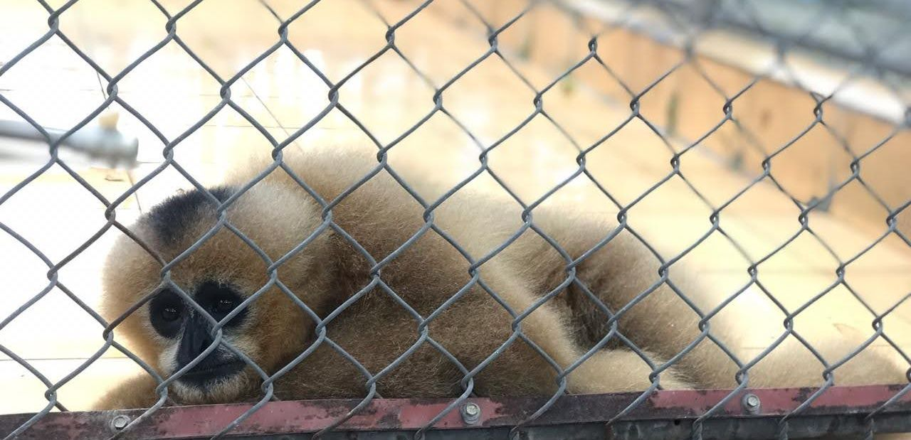
Pressure and breaking point
Overexploitation builds pressure that eventually finds release, through more crime, more conflict and more loss.
TRAFFIC finds the weakest points and secures them before they break.
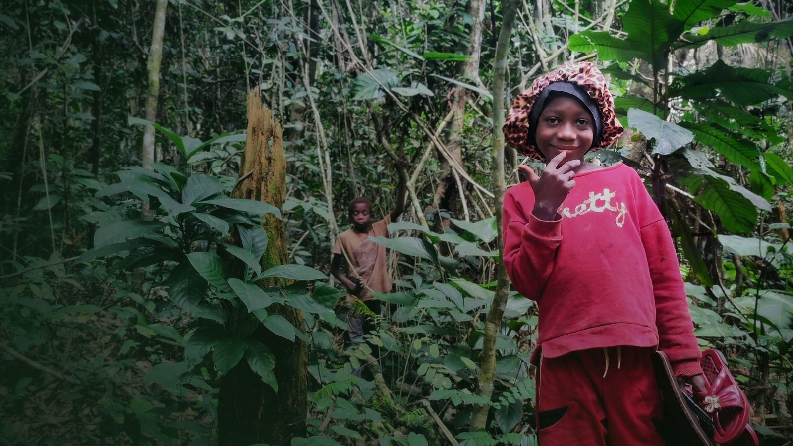
TRAFFIC’s transformation
Telling the story of our next chapter
November 2026
Telling the story of our transformation is how we will inspire new co-operation and build new partnerships. It is how we can all help turn our transformation vision into reality.
This playbook gives practical guidance for everyone within TRAFFIC to talk about our transformation journey with clarity and confidence.
As we share our transformation story, we will gradually shift from a “new" story of change to one that simply describes the way we do things every day.
TRAFFIC’s transformation is just getting started but within 18 months, it will be just the way we operate.
We are here.
We need new partners and funders to get here.
Last chapter
We are the world's leading authority on trade in wild species.
Current position
We are the world's leading authority on trade in wild species.
Next chapter
We are the world's leading authority on trade in wild species.
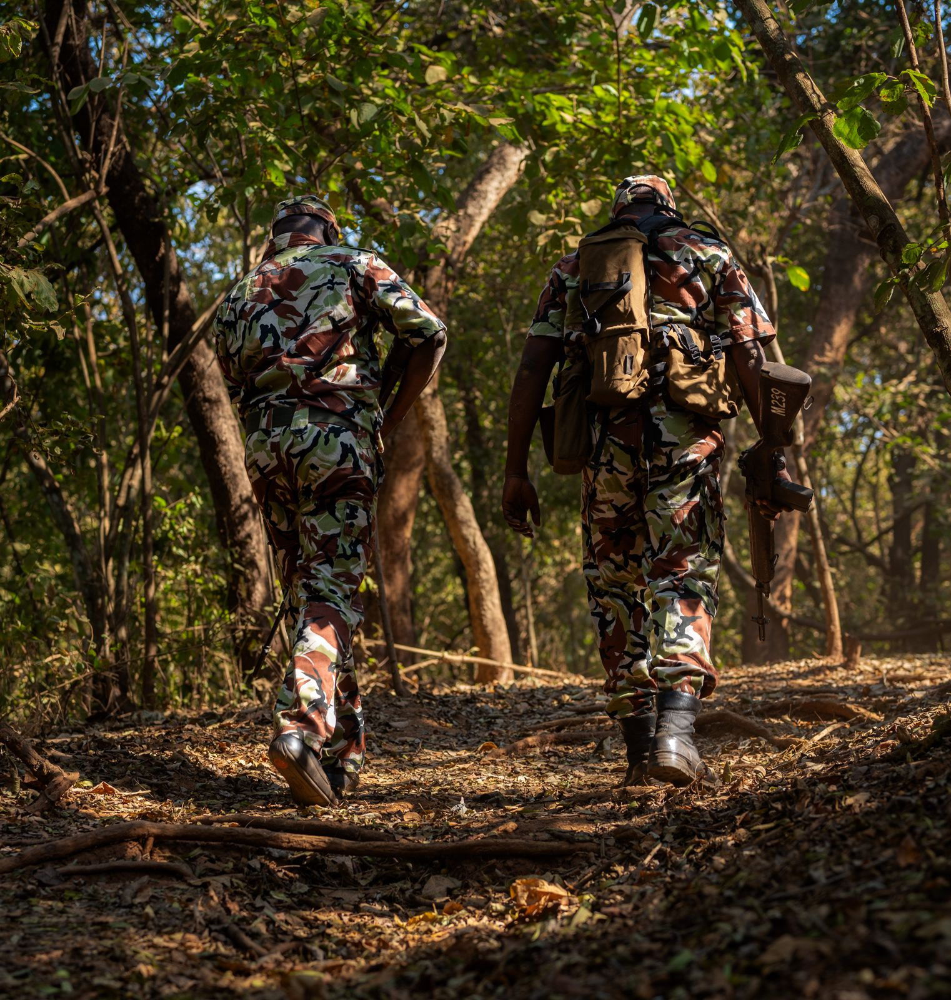
Chapter 1:
Stories grab our attention and create an emotional response. They opens the door to follow-up with facts, data and evidence.
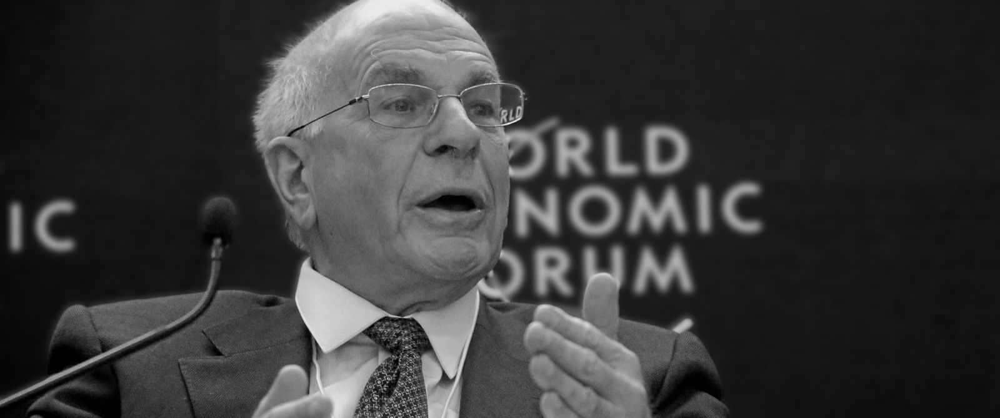
“We like to think we are logical, rational decision makers. But our decisions are often made based on the stories we tell ourselves, rather than facts alone.
Daniel Kahneman, Nobel Prize in Economic Science
System 1: Fast, automatic, emotional and unconscious. Relies on mental shortcuts and snap judgements.
StoriesSystem 2: Slow, deliberate, logical and analytical. Requires intense attention and mental energy.
Facts, data, evidenceThe most successful organisations are empowering their people to be storytellers because they know that’s how they will build new partnerships and influence.
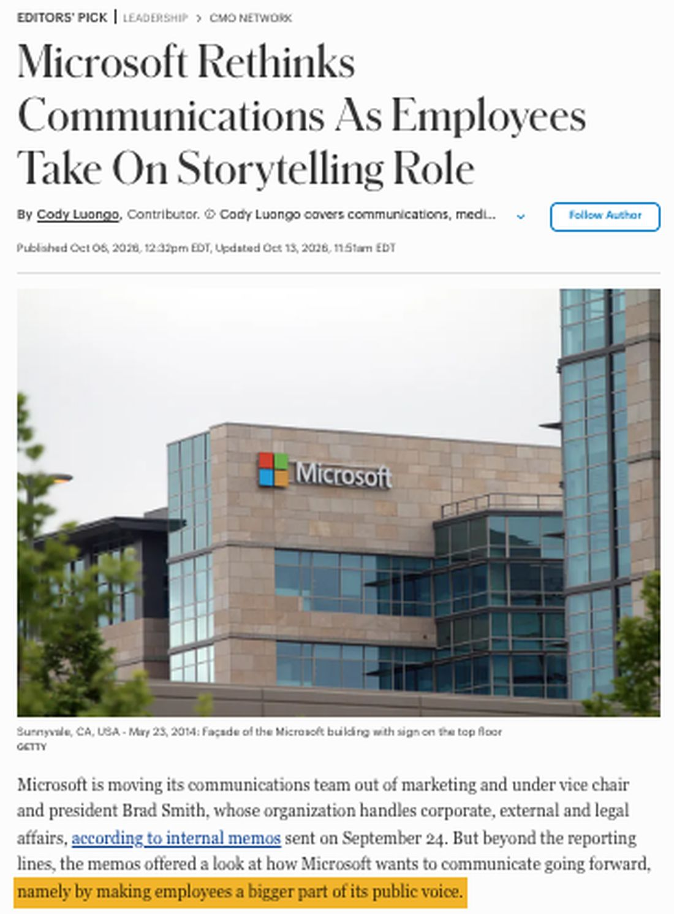
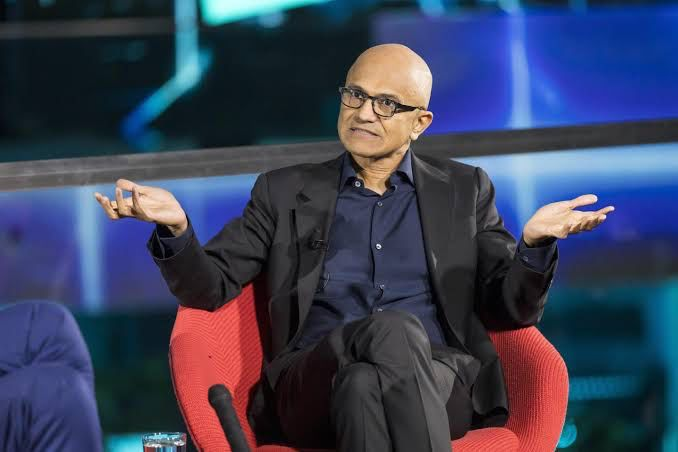
“In a media environment that is increasingly fragmented and noisier than ever… Engineers, sellers, partners and others closest to our products and customers should become an even bigger part of how we tell our story.
Satya Nadella, CEO of Microsoft, Company Memo in Oct 2026
For hundreds of thousands of generations, storytelling has been the primary way we share information.
Our evolutionary biology was shaped so that today our pattern-seeking, narrative-hungry brains are constantly seeking stories that make sense of our world.
Stories provide us with mental shortcuts that inspire and equip us to change, or not.
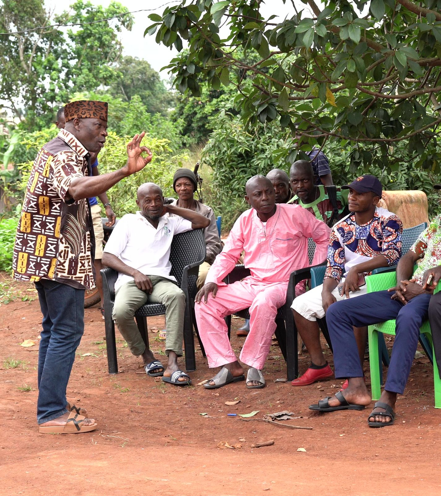
A better story will help the new audiences we need to engage to see how TRAFFIC’s transformation will help them achieve their goals.
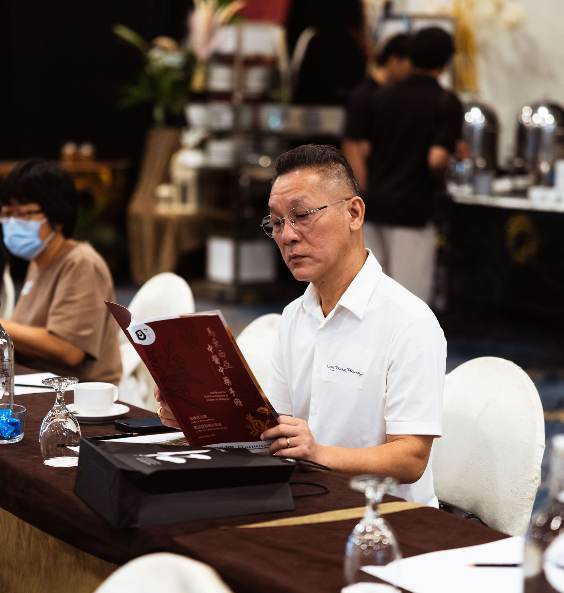
Chapter 2:
Our transformation builds on TRAFFIC’s strengths to increase our impact through radical partnership.
Our belief
The greatest conservation impact comes when trusted and insightful intelligence reaches the people that can drive change.
Two mutually reinforcing drivers of system-level change
A more complete, timely and actionable picture of wildlife trade than has ever existed before.
Builds the data, technology, analysis and insight capability needed to understand wild species trade more clearly and act early.
Evidence that cuts through complexity, reaches the right actors and helps them make better informed decisions.
Turns intelligence into influence by supporting decisions, coalitions and action in the places where TRAFFIC can catalyse change.
TRAFFIC’s value is our ability to spot where pressure is building and coordinate action: how to intervene before something breaks, or change the trajectory towards legal and sustainable trade.
Wild species trade is a system, but it is largely invisible. By establishing it as a system in its own right, we can make the challenges it currently creates feel solvable.
Wild species trade sits at the point where biodiversity loss, organised crime, financial systems, food security and community livelihoods all collide. This is one of the greatest leverage points in the fight for a sustainable planet.
TRAFFIC’s future model makes the most of our position at the epicentre of that system: the point where evidence, actors and decisions converge, and from which influence can radiate outward at scale.
By revealing the hidden nature of a “new” system through our data and influence, we can create energy and momentum to mobilise resources around new solutions. By using systems thinking, language and strategies that already feel familiar to our audiences, we build confidence in the likelihood of success.
This is how we can tell our transformation story in one sentence, 50 words and 200 words.
One sentence
TRAFFIC’s trusted intelligence sits at the epicentre of the wild species trade system, where crime, finance, food, development and nature collide, and new solutions are born.
Short pitch
The wild species trade system is where many of the planet’s biggest challenges collide –from biodiversity loss and organised crime to finance and food security. That’s where pressure builds, and why it is one of the greatest leverage points in the fight for a sustainable planet.
Working in partnership at the epicentre of wild species trade, TRAFFIC turns intelligence into influence. We stop limits being breached and scale sustainable wild species trade that lets people and nature thrive.
About 200 words
Overexploitation of nature builds pressure. Every year, wildlife worth billions of dollars is stolen or traded illegally, pushing wildlife, ecosystems and the livelihoods that depend on them towards breaking point. Left unmanaged, that pressure will find release through more crime, more conflict and more loss.
Wild species trade sits at the point, where biodiversity loss, organised crime, financial systems, food security and community livelihoods collide. That makes it one of the greatest leverage points in the fight for a sustainable planet.
For 50 years, TRAFFIC has been the world’s leading authority on trade in wild species, at the epicentre of that system. Now we must make more progress in the next 10 years than in the last 50. Working in partnership, we turn trusted data and insight into the tools the right people need, when and where they need them. We’re shifting the trajectory away from overexploitation and the cascading biodiversity loss it drives, with the threats that brings to food and water security, and human health.
Together, we’re moving towards a world where people and planet thrive, safely within nature’s limits.
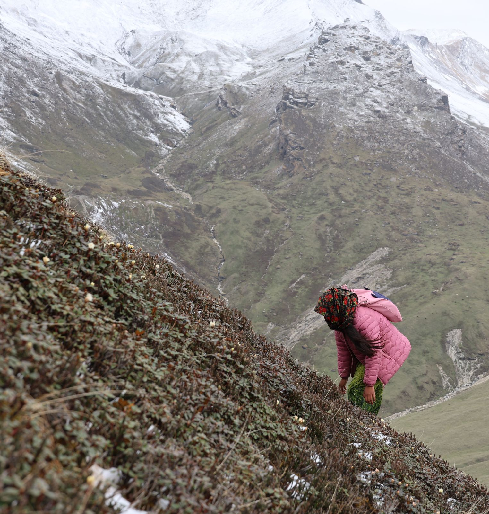
Chapter 3:
Storytelling tactics to attract support, partnerships and collaboration.
Our audiences are already telling themselves a story about broken systems. Show them how engaging with wild species trade makes their story better.
TRAFFIC brings the skills, experience and expertise to make change possible. We are not the hero of the story. We are the mentor or ally.
Create urgency and make people pay attention and care about the problem we are trying to solve, together.
Use examples and proof to bring our story to life, and help people understand how they can be part of it.
Different people process information in different ways. Using Whole Brain Thinking helps your story appeal to a wider audience.
Use recognisable patterns and keep your language easy to understand, remember and share.
Our audiences are already telling themselves a story about broken systems. Show them how engaging with wild species trade makes their story better.
Our story doesn’t exist in a vacuum. By starting with the story our audience is telling themselves, we can show them that wild species trade intersects with the problems they are trying to solve.
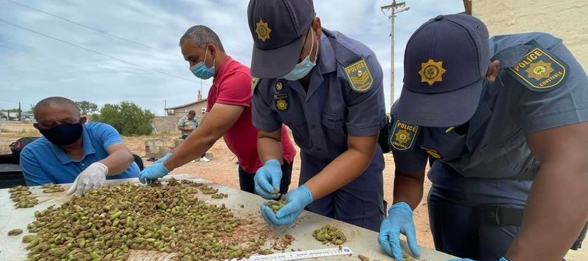
What this means for our storytelling
“TRAFFIC is the world's leading authority on trade in wild species.
“You’re working to fix broken systems such as…. Wild species trade sits at the point of where crime, finance, food, development and nature collide. As the world’s leading authority on trade in wild species, TRAFFIC can help you turn our trusted intelligence into action.”
1: Start with your audience
Our current and new partners are already telling themselves a story about the trade of wild species and TRAFFIC.
We need to give them a better story about our transformation, that helps them understand how partnering with TRAFFIC can help them achieve their goals.
But the best story works as a lever of change, if we tell it together, we can also create a broader narrative and mindset shift around the trade of wild species
TRAFFIC’s role is the mentor or ally that helps our heroes achieve the change they are seeking. We are not the hero.
The heroes of our story are building a world where humans and nature thrive together. They are the people and organisations who are going on a journey of change.
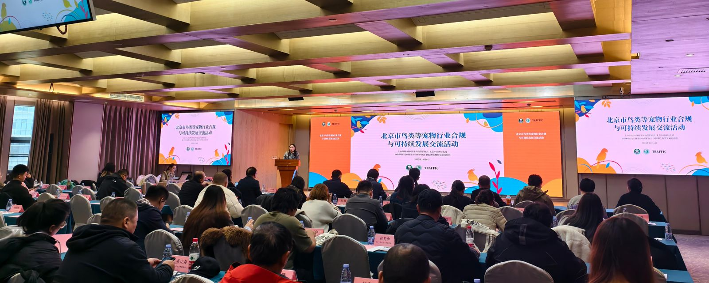
What this means for our storytelling
TRAFFIC is the world’s leading authority on wildlife trade. Our research and expertise are improving the trade of wild species.
TRAFFIC helps leaders in systems change build a world where people and nature thrive together. By putting trusted data and insight about the trade of wild species into their hands, they can act before pressure reaches breaking point.
Create urgency and make people pay attention and care about the problem we are trying to solve, together.
Stories of change need jeopardy. When people can see what is at stake, they understand why change matters and why it can’t wait. Overexploitation of nature and people is building pressure to a breaking point.
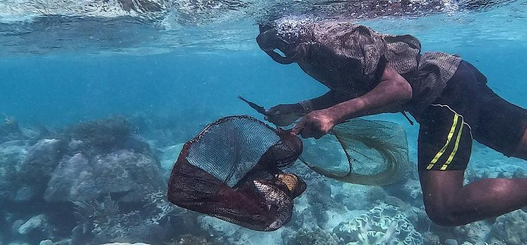
What this means for our storytelling
TRAFFIC was established 50 years ago to bring credible evidence and analysis to address the emerging challenges of illegal wildlife trade.
It took TRAFFIC 50 years to become the world's leading authority on trade in wild species. But, we have perhaps a tenth of that time to convert that authority into decisive action that can be taken together by governments, organisations, communities and new coalitions of change.
3: Raise the stakes
Using metaphors and imagery provides visual shortcuts to help people understand our story quickly.

Overexploitation builds pressure that eventually finds release, through more crime, more conflict and more loss.
TRAFFIC finds the weakest points and secures them before they break.
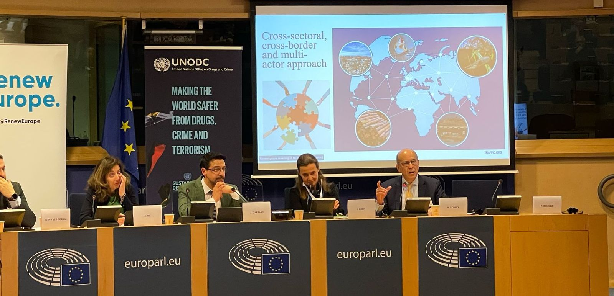
The point where evidence, actors and decisions converge, and from which influence radiates outward.
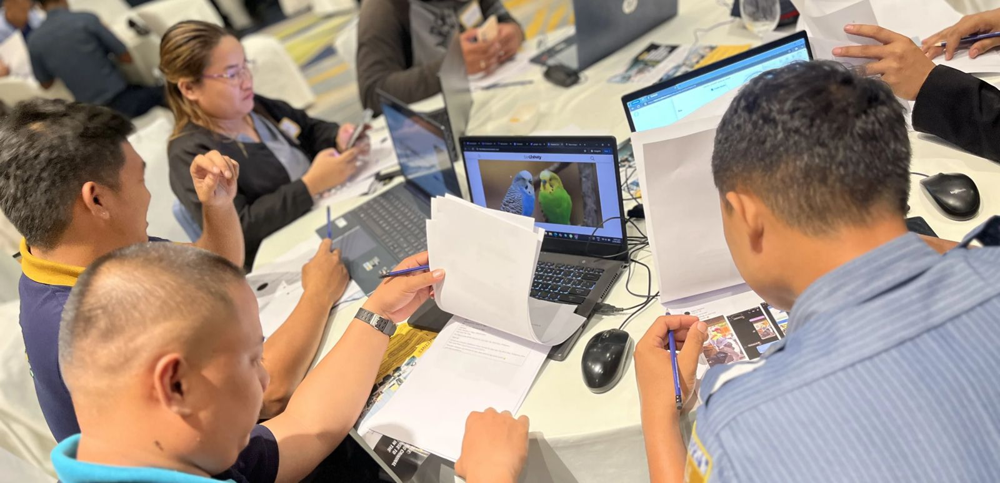
Fifty years bringing evidence and analysis to the front line of tackling illegal trade, and the first line of establishing and scaling legal, sustainable trade.
Why metaphors work
A good metaphor opens a gap in the mind – and closing it gives a small dopamine reward.
3: Raise the stakes
What it looks like when pressure builds from the current wildlife trade system
Use examples and proof to bring our story to life, and help people understand how they can be part of it.
Telling people what we are doing isn’t enough to motivate them to join us. Showing the change and the people who make it happen, allows audiences to reach the conclusion themselves.
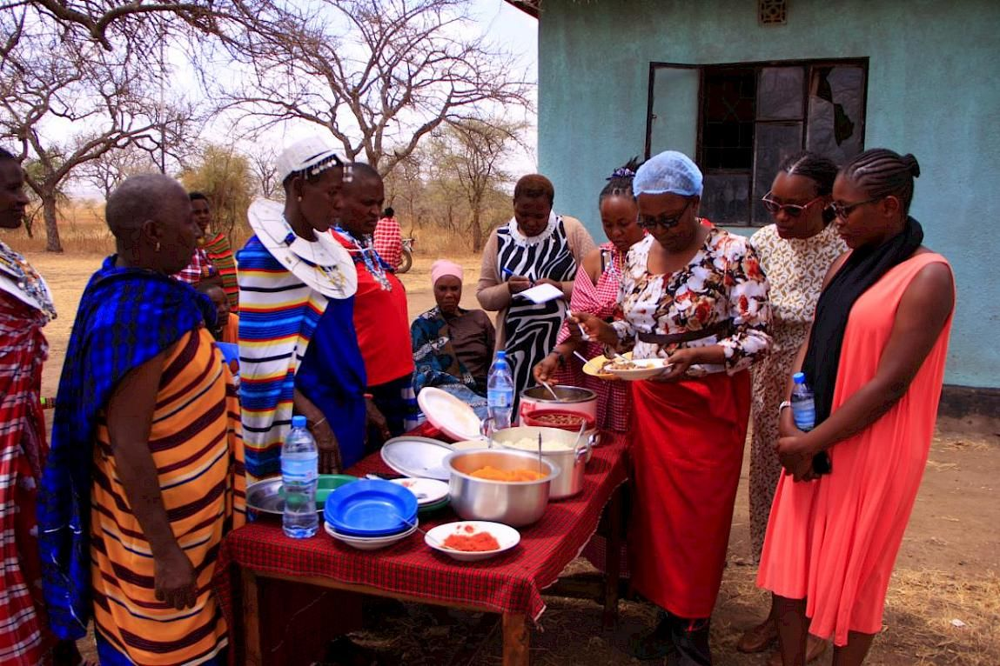
What this means for our storytelling
TRAFFIC produced research on illegal wild meat consumption.
In the Kwakuchinja Wildlife Corridor, 99% of people now report not consuming illegal wild meat, after trusted local messengers shared messages shaped by TRAFFIC research.
Different people process information differently. Using Whole Brain Thinking allows your story to appeal to a wider audience.
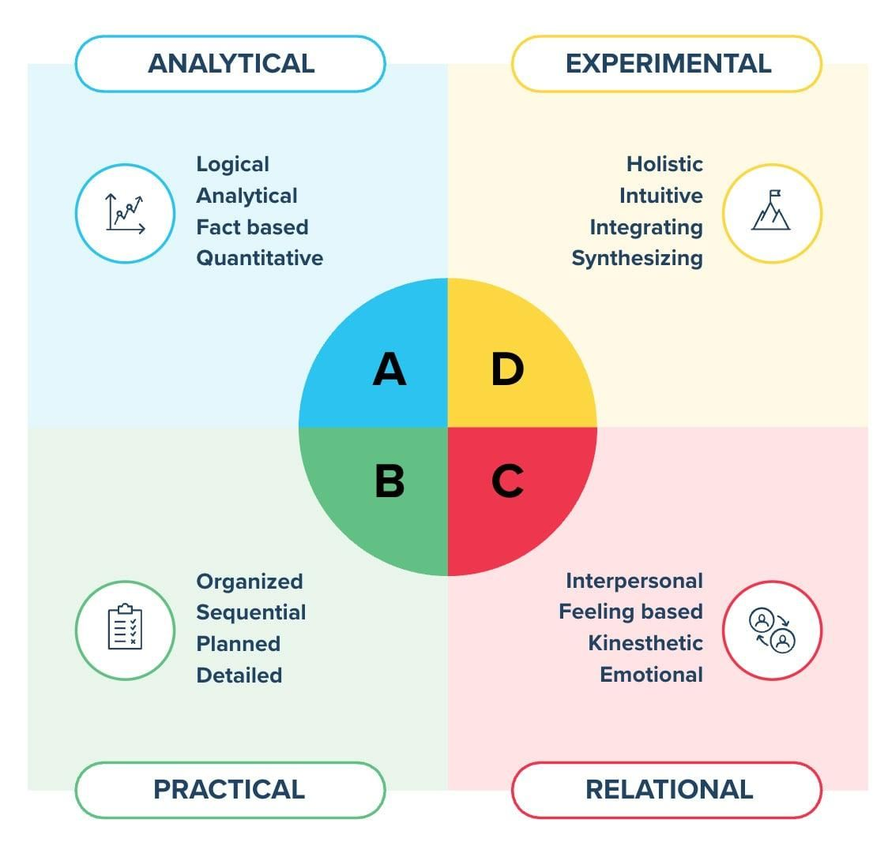
What this means for our storytelling
Speaking to just one thinking preference e.g. our data shows that…
Using different story telling methods that are:
Analytical: facts and figures e.g. shown as data in charts.
Experimental: the big picture and ambition e.g. a schematic of a system, using intuitive language.
Practical: the process or steps taken e.g. shown as a timeline of change.
Relational: the people behind the data e.g. case stories, quotes or emotional imagery.
Be clear how our audiences fit in our story and how they can help
Our brains are pattern-seeking and narrative-hungry. They have evolved to conserve energy, which is why we automatically look for shortcuts and recognisable patterns to explain the world around us. If a story takes effort to decode, people switch off. Explaining is often losing.
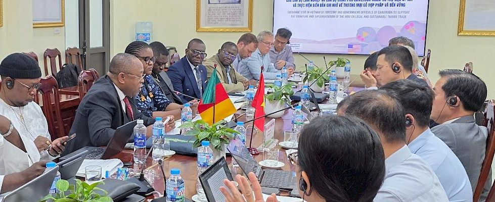
What this means for our storytelling
“TRAFFIC will harness the power of data and innovative technologies, together with expertise and through partnerships, to generate actionable insights…”
“The greatest conservation impact comes when trusted and insightful intelligence reaches the people that can drive change.”
6: Make it easy to act
Shortcuts to make your point quickly
Heroes
Raising the stakes
with a compelling (villian)
Why the journey of change is worth it
(better world)
TRAFFIC’s role as mentor
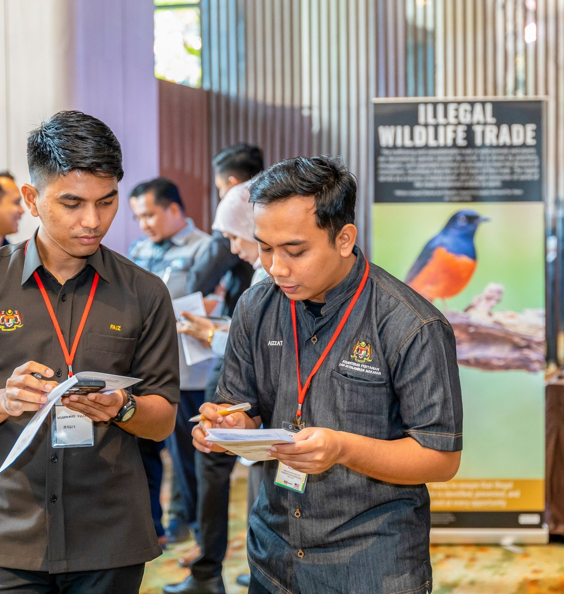
Chapter 4:
“The pressure on nature is intensifying. And the next few years will be decisive. That’s why our response must be faster, and even smarter and more connected than ever before.
New Scientist article by Melanie Heath, Senior Director – Global Programme Office
Every year, wildlife worth billions of dollars is stolen or sold illegally. This includes familiar high-value products such as ivory, pangolin scales and rhino horn. But on a far greater scale, illegal and poorly regulated trade in timber, fish, medicinal plants and other wild species is inflicting immense, often unseen damage.
Unsustainable and illegal trade pushes species towards extinction and ecosystems towards collapse. It deprives governments and communities of vital income, while fuelling corruption, violence and organised crime.
Yet wildlife trade need not be inherently destructive. Managed sustainably and legally, trade in wild species can support conservation, reduce crime, strengthen local economies and give communities a tangible stake in protecting nature. This makes wildlife trade one of the most powerful, but often overlooked, leverage points in tackling the global biodiversity crisis.
There is no time to lose. TRAFFIC was founded 50 years ago to bring evidence and analysis to the front lines of illegal wildlife trade. But the five decades in which we built our datasets and expertise are a lifetime compared to the rapidly closing window of opportunity now left to get that intelligence and insight into the hands of people who can drive real change.
In Tanzania, for example, an electronic tracking device introduced by TRAFFIC has been developed into a nationwide system for monitoring timber consignments. Better traceability has reduced illegal activity, improved governance and enabled degraded forests to recover.
In Cameroon, community forestry is helping local communities navigate complex legal systems so they can sustainably manage forest resources, generating income which they can use for health facilities and schools. In Nepal, sustainable harvesting, traceability and fairer supply chains are helping protect valuable Himalayan medicinal plants while strengthening rural livelihoods.
As countries turn the commitments of the Global Biodiversity Framework into action, equitable benefit-sharing must be central. People living closest to biodiversity should not bear the costs of conservation while others receive the rewards.
The choice is not simply between trade and protection. It is between trade that depletes nature and trade that helps sustain it. With clear legislation, traceable supply chains and benefits for local people, wildlife trade can become part of the solution rather than one of nature’s greatest threats.
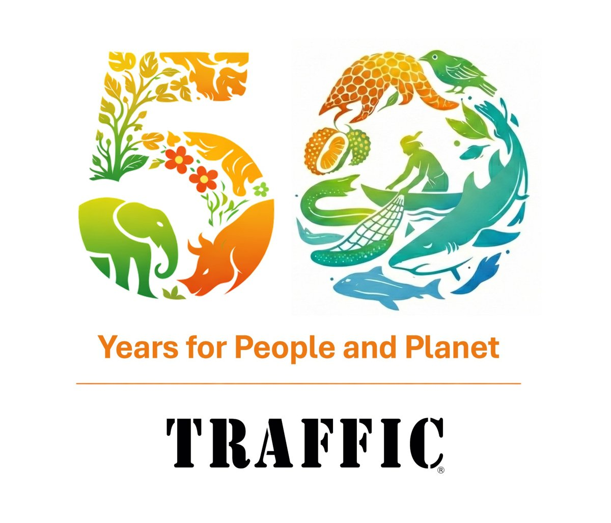
““TRAFFIC has shown that wildlife trade is a ‘system’. This systems perspective is one of the major contributions that TRAFFIC has played in terms of how we, organisations like WWF, and other conservation organisations understand and address overexploitation.”
Kristen Schuijt, WWF
““TRAFFIC has helped communicate with the world why this work matters. Progress depends on partnership.”
Ivonne Higuero, CITES
““TRAFFIC proves when policy is grounded in evidence, real-world systemic change is possible. The European Union looks forward to the next chapter of this essential partnership.”
Cristina De Avila, European Commission
““TRAFFIC has the potential to speed the advent of a better world quite significantly.”
Mark Halle, Chairman of TRAFFIC’s Board
We hope this playbook gives you the confidence to tell a clear, consistent and memorable story about TRAFFIC’s next chapter. Help is always available: talk to the communications team about using these messages in your conversations, presentations and partnerships. Or, book a comms consultation before your next knowledge product.